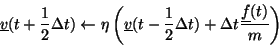
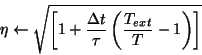
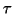
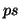

The Berendsen thermostat is essentially a cross between the NVE and Gaussian algorithms that uses a user defined relaxation constant that determines the degree of rescaling of the velocities. The Berendsen thermostat can be used to push a system towards a desired temperture as oppsed to enforcing it. The basic algorithm is detailed bellow:


Where

is the user defined time constant in units of
. As with the Gaussian thermostat, the temperature is calcaulted self consistently over three iterations.